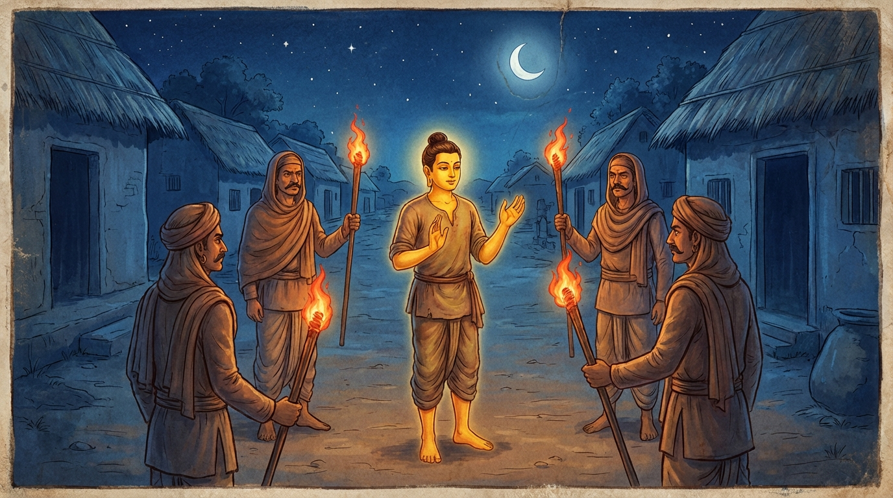

1. බන්ධනාගාර ජාතකය (201)
“න තං දළ්හං බන්ධනමාහු ධීරා” (නුවණැත්තෝ එය දැඩි බන්ධනයක් යැයි නොකියති) යන මේ දේශනාව බුදුරජාණන් වහන්සේ ජේතවනාරාමයෙහි වැඩවාසය කරන සමයේ බන්ධනාගාරයක් මුල් කරගෙන දේශනා කළ සේක.
එකල ගෙවල් බිඳින, මං පහරන, මිනී මරන බොහෝ සොරුන් අල්ලාගෙන අවුත් කොසොල් රජතුමාට ඉදිරිපත් කළහ. රජතුමා ඔවුන්ව යදම් (අද්දු), රැහැන් (රජ්ජු) සහ දම්වැල් (සංඛලික) ආදියෙන් බඳින ලද්දේය.
තිස් නමක් පමණ වූ ජනපදවාසී භික්ෂූන් වහන්සේලා බුදුරජාණන් වහන්සේව බැහැදැකීමට කැමතිව පැමිණ, උන්වහන්සේව දැක වන්දනා කොට, පසුදින පිඬු පිණිස හැසිරෙන්නාහු බන්ධනාගාරයට ගොස් ඒ සොරුන් දුටුහ. පිණ්ඩපාතයෙන් වැළකී දන් වළඳා, සවස් කාලයෙහි තථාගතයන් වහන්සේ වෙත එළඹ මෙසේ ඇසූහ:
“ස්වාමීනි, අද පිඬු පිණිස හැසිරෙන අප විසින් බන්ධනාගාරයේ සිටින බොහෝ සොරුන් දකින ලදී. ඔවුහු යදම් ආදියෙන් බැඳී මහත් දුක් විඳිති. ඔවුන්ට ඒ බන්ධන සිඳ පලා යා නොහැක. ඒ බන්ධනවලට වඩා දැඩි වූ වෙනත් බන්ධනයක් තිබේද?”
එවිට ශාස්තෲන් වහන්සේ: “මහණෙනි, මේවා කිනම් බන්ධනද? යම් ඒ ධන, ධාන්ය, අඹුදරුවන් ආදිය කෙරෙහි ඇති තෘෂ්ණාව නැමැති කෙලෙස් බන්ධනයක් වේද, එය මේ බන්ධනවලට වඩා සියගුණයක්, දහස් ගුණයක් දැඩි වේ. මෙසේ මහත් වූද, සිඳලීමට අපහසු වූද ඒ බන්ධනය පෙර සිටි පණ්ඩිතවරු සිඳ දමා හිමාලයට පිවිස පැවිදි වූහ” යැයි වදාරා අතීත කථාව ගෙනහැර දැක්වූ සේක.
පෙර බරණැස් නුවර බ්රහ්මදත්ත රජු රජ කරන සමයේ බෝධිසත්වයන් වහන්සේ එක් දිළිඳු ගෘහපති කුලයක උපන්හ. වැඩිවියට පත් ඔහුගේ පියා කලුරිය කළේය. ඔහු බැලමෙහෙවර කරමින් මව පෝෂණය කළේය. ඉක්බිති මව, ඔහුගේ අකමැත්ත තිබියදී ම එක් කුල දියණියක් ගෙදරට කැඳවා දී පසු කලෙක කලුරිය කළාය.
ඔහුගේ බිරිඳගේ කුසෙහි දරු ගැබක් පිහිටියේය. ඔහු ගැබ පිහිටි බව නොදැන ඇය අමතා, “සොඳුරිය, නුඹ කුලියක් මලියක් කර ජීවත් වන්න. මම පැවිදි වන්නෙමි” යි කීවේය. ඇය ද, “මට දරු ගැබක් පිහිටා ඇත. දරුවා බිහිවූ පසුව දරුවා දැක පැවිදි වන්න” යැයි කීවාය. ඔහු “යහපතැයි” එය පිළිගෙන, ඇගේ දරු ප්රසූතියෙන් පසුව, “සොඳුරිය, නුඹ සුවසේ දරුවා බිහි කළෙහිය. දැන් මම පැවිදි වන්නෙමි” යැයි විචාළේය. එවිට ඇය, “පුතා කිරි බීමෙන් වැළකෙන තුරු ඉවසන්න” යැයි ඔහුට පවසා නැවතත් ගැබ් ගත්තීය.
ඔහු මෙසේ සිතුවේය: “මැයව කැමති කරවාගෙන නම් යන්නට නොහැකිය. මැයට නොකියාම පලා ගොස් පැවිදි වන්නෙමි.”
ඔහු ඇයට නොකියාම රාත්රී කාලයේ නැගිට පලා ගියේය. එසේ යන විට නගර ආරක්ෂකයෝ ඔහු අල්ලා ගත්හ. හෙතෙම, “ස්වාමීනි, මම මවට උපස්ථාන කරන්නෙක්මි (මාතුපෝෂක), මා නිදහස් කරන්න” යැයි කියා ඔවුන් ලවා තමන්ව නිදහස් කරවා ගත්තේය.
පසුව එක්තරා ස්ථානයක නතර වී සිට, ප්රධාන දොරටුවෙන්ම නික්මී හිමාල වනයට ගොස්, තාපස පැවිද්දෙන් පැවිදි විය. එහිදී අභිඥා සහ සමාපත්ති උපදවාගෙන, ධ්යාන ක්රීඩාවෙන් (ධ්යාන සුවයෙන්) කල් ගෙවීය. ඔහු එහි වාසය කරමින්, “මෙබඳු සිඳලීමට අපහසු අඹුදරු බන්ධනය හා කෙලෙස් බන්ධනය කපා දැමුවෙමි” යි උදන් අනමින් මේ ගාථාවන් පැවසීය:

“යකඩයෙන් ද, ලීයෙන් ද, බබුස් තණ ආදියෙන් ද කළ බන්ධනය දැඩි යැයි නුවණැත්තෝ නොකියති. මැණික් හා කුණ්ඩලාභරණ කෙරෙහි යම් දැඩි ඇලීමක් වේද, අඹුදරුවන් කෙරෙහි යම් අපේක්ෂාවක් වේද,”
“නුවණැත්තෝ ඒ බන්ධනය දැඩි යැයි කියති. එය පහතට අදින සුළුය, (පෙනුමට) ලිහිල් නමුත් ගැලවීමට ඉතා අපහසුය. කාමයන්හි අපේක්ෂා රහිත ධීරයෝ, කාම සැප හැර දමා, ඒ බන්ධනය ද සිඳ බිඳ දමා යති.”
යනුවෙන් මෙම ගාථාවන් වදාළේය.
යකඩයෙන් කළ බන්ධනය ද, දැවයෙන් කළ බන්ධනය ද, වැහැරි ආදියෙන් කළ බන්ධනය ද දැඩි බන්ධන යැයි නුවණැත්තෝ නොකියති. මැණික් හා කුණ්ඩලාභරණ කෙරෙහි යම් දැඩි ඇලීමක් ඇත්ද, අඹුදරුවන් කෙරෙහි යම් අපේක්ෂාවක් ඇත්ද,
(මුලින් කී) මේ බන්ධනය දැඩි යැයි නුවණැත්තෝ කියති. එය පහතට අදින්නා වූ, සිනිඳු (ලිහිල්) වූ, එහෙත් මුදාලිය නොහැකි ක්ලේශ බන්ධනයකි. කාමයන්හි අපේක්ෂා රහිත නුවණැත්තෝ එය ද සිඳ දමා, කාම සැප හැර පියා තපසට යති.
එහි ධීරා යනු ධෛර්යය ඇත්තාහු ය. පව් පිළිකුල් කරන බැවින් ද ‘ධීරා’ නම් වෙති. නොඑසේනම් ‘ධී’ යනු ප්රඥාවයි; ඒ ප්රඥාවෙන් යුක්ත වූවෝ ‘ධීරා’ නම් වෙති. බුදු, පසේබුදු, බුදුසව්, බෝසත් යන මොවුහු ධීරයෝ නම් වෙති.
යදායසං යනාදියේ ආයසං යනු යකඩින් කරන ලද දම්වැල් ආදී බන්ධනයයි. දාරුජං යනු ලීයෙන් කරන ලද දඬුකඳ ආදියයි. බබ්බජඤ්ච යනු බබ්බජ නම් තණවලින් හෝ අන්ය වූ වැහැරි පට්ටා ආදියෙන් ලණු තනා කරන ලද රැහැන් බැඳුමයි. ධීරයෝ එම යකඩ ආදී බන්ධනයන් කපා දැමීමට හැකි බැවින් ඒවා ‘දළ්හං’ (දැඩි) යැයි නොකියති.
සාරත්තරත්තා යනු දැඩි ඇලීමෙන් යුතුව ඇලුණු, බලවත් රාගයෙන් ඇලුණු යන අර්ථයි. මණිකුණ්ඩලෙසු යනු මැණික් කෙරෙහි ද, කුණ්ඩලාභරණ කෙරෙහි ද, නැතහොත් මැණික් ඔබ්බවන ලද කුණ්ඩලාභරණ කෙරෙහි ද යන්නයි.
එතං දළ්හං යනු යමෙක් මැණික් හා කුණ්ඩලාභරණ කෙරෙහි දැඩි ලෙස ඇලුණාහු ද, ඔවුන්ගේ යම් රාගයක් වේ ද, අඹුදරුවන් කෙරෙහි යම් තෘෂ්ණා අපේක්ෂාවක් වේ ද, ඒ කෙලෙස් බන්ධනය දැඩි ය, ස්ථිර යැයි නුවණැත්තෝ කියති.
ඔහාරිනං යනු ඇදගෙන ගොස් සතර අපායේ හෙළන බැවින් ද, පහතට ගෙන යන බැවින් ද ‘ඔහාරින’ (යටට අදින) නම් වේ.
සිථිලං යනු බඳින ලද ස්ථානයේ සිවිය, මස් හෝ හම නොසිඳියි; ලේ පිටතට නොගනියි; බැඳ ඇති බවක් වත් නොදන්වයි; ගොඩබිම සහ දියෙහි කටයුතු කිරීමට ඉඩ දෙයි. එබැවින් එය ‘සිථිල’ (ලිහිල්) නම් වේ.
දුප්පමුඤ්චං යනු තෘෂ්ණා ලෝභ වශයෙන් එක් වරක් හෝ උපන් කෙලෙස් බැම්ම, ඉදිබුවකු (කැස්බෑවකු) යමක් ඩැහැගත් විට එය මුදා හැරීමට අපහසු වන්නාක් මෙන්, ගැලවීමට අපහසු වන බැවින් ‘දුප්පමුඤ්ච’ නම් වේ.
එතම්පි ඡෙත්වාන යනු මෙසේ දැඩි වූ ඒ කෙලෙස් බන්ධනය නුවණ නැමැති කඩුවෙන් සිඳ, යකඩ දම්වැල් කඩා දමන මත් ඇතුන් මෙන් ද, කූඩු කඩාගෙන යන සිංහ පැටවුන් මෙන් ද, අශූචි දමන භූමියක ජීවත් වීම පිළිකුල් කරන්නාක් මෙන් ද, අනපෙක්ඛිනො (අපේක්ෂා රහිත) වී කාමසුඛං පහාය වජන්ති (කාම සැප හැර යති) යන්නයි. ඔවුහු එසේ නික්ම ගොස් හිමාලයට වැද තවුස් පැවිද්දෙන් පැවිදි ව ධ්යාන සුවයෙන් කල් ගෙවති.
මෙසේ බෝධිසත්වයන් වහන්සේ මෙම උදානය ප්රකාශ කොට, නොපිරිහුණු ධ්යාන ඇතිව (කලුරිය කොට) බ්රහ්ම ලෝකයේ උපන් සේක.
බුදුරජාණන් වහන්සේ මේ ධර්ම දේශනාව ගෙනහැර දක්වා චතුරාර්ය සත්යය ප්රකාශ කළ සේක. සත්ය දේශනාව අවසානයේ සමහරෙක් සෝවාන් වූහ, සමහරෙක් සකෘදාගාමී වූහ, සමහරෙක් අනාගාමී වූහ, සමහරෙක් රහත් වූහ.
එකල මව වූයේ මහාමායා දේවියයි. පියා වූයේ සුද්ධෝදන මහරජතුමා ය. භාර්යාව වූයේ රාහුල මාතාව ය. පුත්රයා වූයේ රාහුල ය. අඹුදරුවන් හැර දමා නික්මී පැවිදි වූ පුරුෂයා වනාහි මම ම වෙමි යි වදාළ සේක.
පළමු වන බන්ධනාගාර ජාතක වර්ණනාව නිමි.